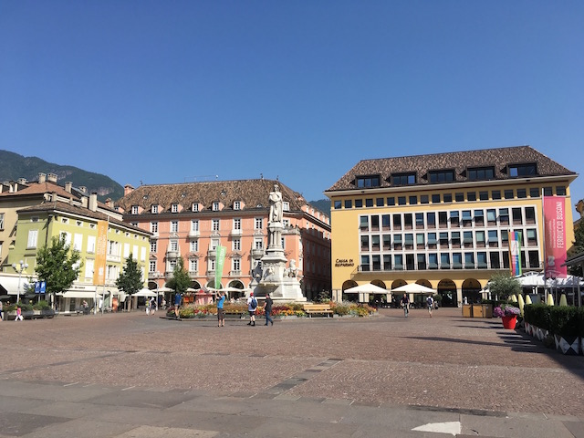

About Bozen-Bolzano
The city
Bolzano (German: Bozen, Ladin: Bulsan) is the capital and the largest city of the province of South Tyrol in northern Italy.
It is the seat of the Free University of Bozen-Bolzano, where lectures and seminars are held in English, German and Italian.
The city is also home to the Italian Army's Alpini High Command (COMALP) and some of its combat and support units.
In the 2014 version of the annual ranking of quality of life in Italian cities, Bolzano was ranked
as having the Best Quality of Life in Italy.

The region
South Tyrol (Italian: Alto Adige, German: Südtirol) is an autonomous province in
northern Italy. It is one of the two autonomous provinces that make up the autonomous
region of Trentino-Alto Adige/Südtirol. Featuring the unique beauty of the Dolomites,
a UNESCO World Heritage Site, South Tyrol offers an eye-catching landscape steeped in
legend and shaped by the contrast between Alpine-peak formations and Mediterranean wine
country. South Tyrolean specialities like apples, wine and smoked ham are produced here.
South Tyrol is on of the most coveted place to live in all of Europe where, in addition
to traditional ties, a sense of innovation and design is palpable. After all, the people
of South Tyrol and their culture make the difference. It is the meeting place of the Italian,
German and Ladin languages. It is a mixture of southern ease and rural sense of tradition.
The influences of true South Tyrolean personalities and luminaries have combined to mould
this province.